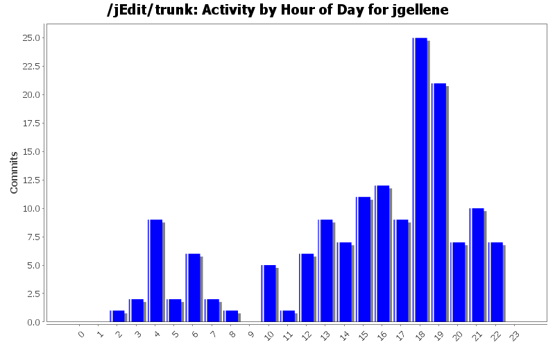
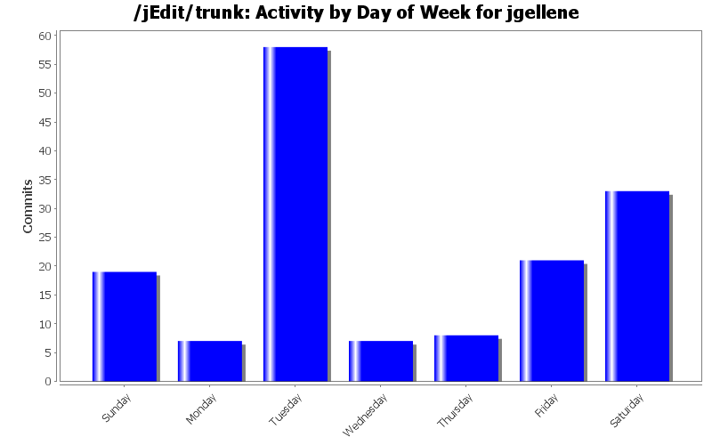
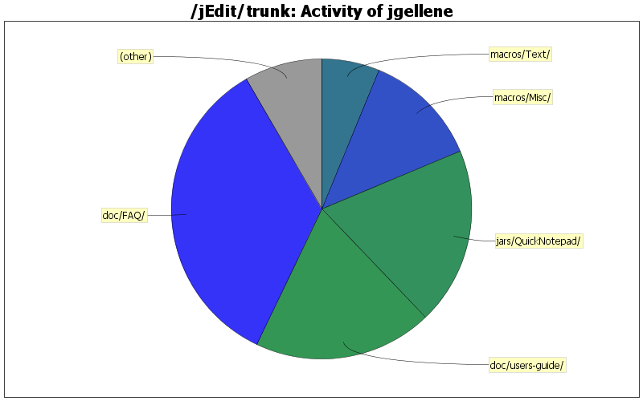

| Directory | Changes | Lines of Code | Lines per Change |
|---|---|---|---|
| Totals | 153 (100.0%) | 5438 (100.0%) | 35.5 |
| doc/FAQ/ | 35 (22.9%) | 1885 (34.7%) | 53.8 |
| doc/users-guide/ | 30 (19.6%) | 1047 (19.3%) | 34.9 |
| jars/QuickNotepad/ | 34 (22.2%) | 1038 (19.1%) | 30.5 |
| macros/Misc/ | 14 (9.2%) | 680 (12.5%) | 48.5 |
| macros/Text/ | 17 (11.1%) | 337 (6.2%) | 19.8 |
| macros/Search/ | 10 (6.5%) | 212 (3.9%) | 21.2 |
| macros/Java/ | 6 (3.9%) | 115 (2.1%) | 19.1 |
| macros/Files/ | 4 (2.6%) | 70 (1.3%) | 17.5 |
| macros/Misc/Properties/ | 3 (2.0%) | 54 (1.0%) | 18.0 |

Revised to fix bug arising in jEdit 4.1pre5 - built-in variables lose global visibility in listener method
11 lines of code changed in 1 file:
Updated for jEditLauncher 4.0.4
44 lines of code changed in 1 file:
Revert to non-modal dialog; add callls to buffer.begin/endCompoundEdit()
3 lines of code changed in 1 file:
Modifications for jEdit 4.0 buffer and plugin API's
271 lines of code changed in 6 files:
Minor corrections and editorial changes for jEdit 4.0pre6
81 lines of code changed in 1 file:
Minor corrections; added question on out of memory errors
43 lines of code changed in 2 files:
Minor corrections and editorial changes for jEdit 4.0pre6
82 lines of code changed in 3 files:
Editorial changes for jEdit 4.0pre6
64 lines of code changed in 1 file:
Editorial changes for jEdit 4.0pre6
56 lines of code changed in 1 file:
Minor corrections
6 lines of code changed in 1 file:
Minor corrections and update for jEdit 4.0
49 lines of code changed in 1 file:
Minor corrections
29 lines of code changed in 1 file:
Minor corrections and update for jEdit 4.0; move single-execution macro section to follow discussion of simple macros
142 lines of code changed in 2 files:
Minor corrections
39 lines of code changed in 1 file:
Minor corrections
17 lines of code changed in 1 file:
Minor corrections and additions
39 lines of code changed in 1 file:
Hiding a dangling xref until a later revision
0 lines of code changed in 1 file:
Added MacOS installation Q and A; corrected link
42 lines of code changed in 3 files:
Three new macro questions.
83 lines of code changed in 1 file:
Documentation changes for version 4.0
18 lines of code changed in 1 file:
(41 more)